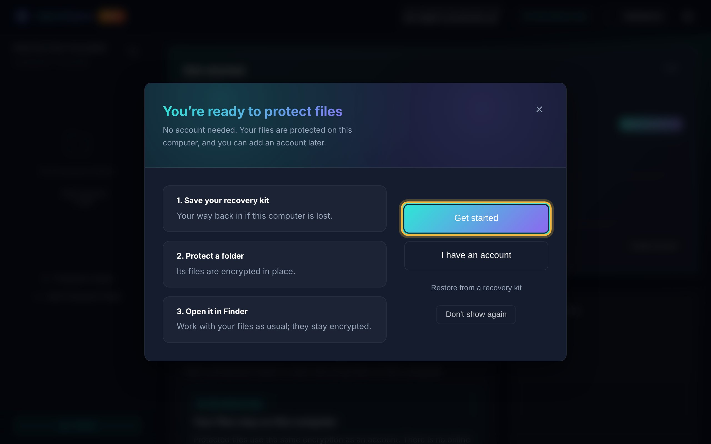
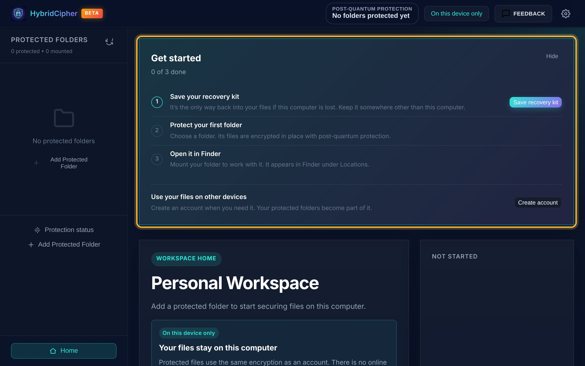
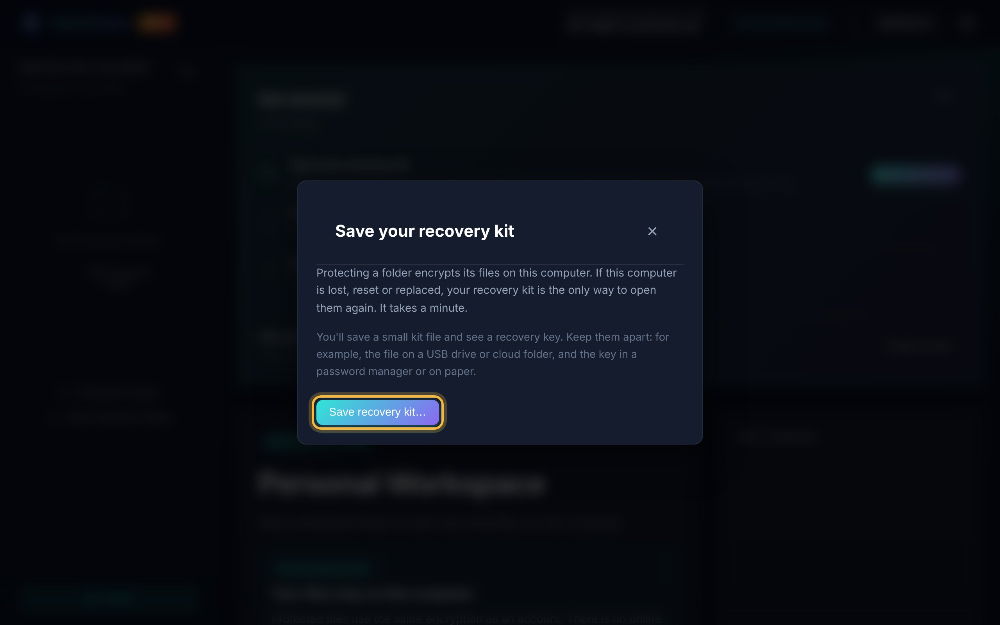
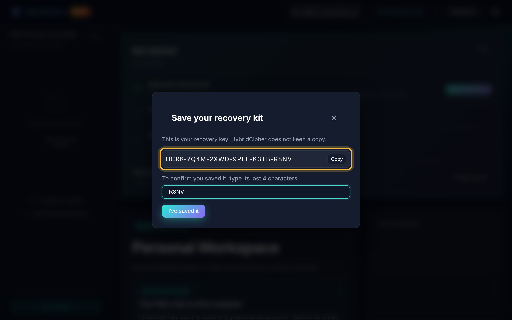
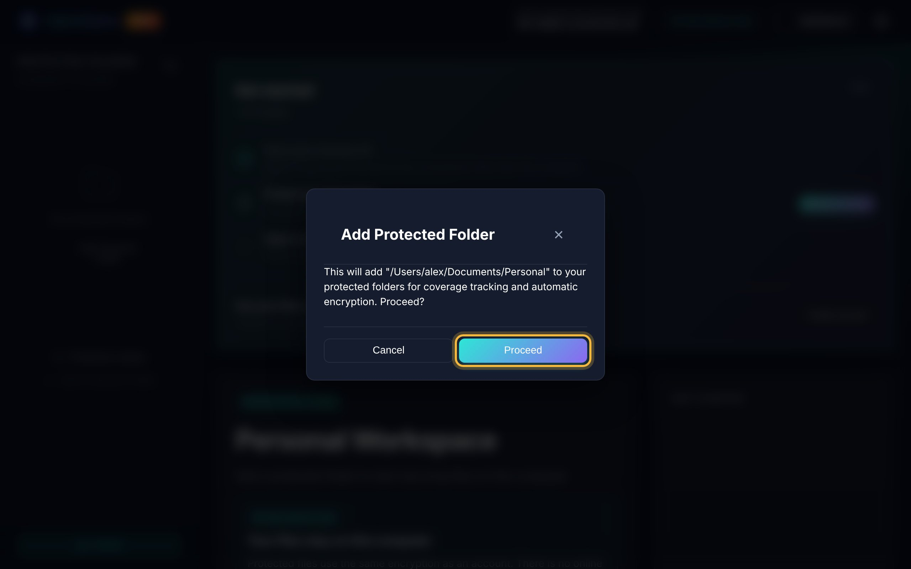
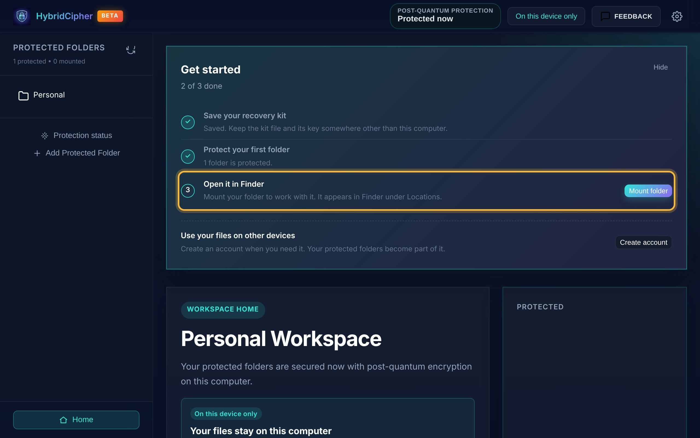
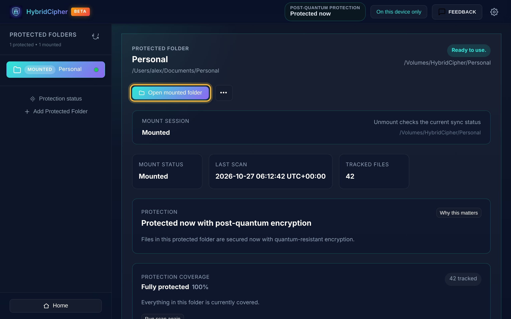
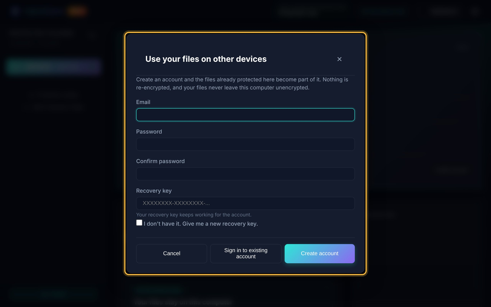

Protect your files on this computer
Set up HybridCipher on your own, without an account. You'll save a recovery kit, protect a folder, and then work with its files as usual while they stay encrypted.
- About 5 minutes
- macOS and Windows
- No account needed
Quick walkthrough
-
Open the app
The first time you open HybridCipher, it sets itself up on this computer. You don't need an account. Click Get started.

The welcome window lists the three things you'll do next. -
Follow the Get started checklist
Home shows a short checklist. Only the next step has a button, so you can always see what to do now. The rest of this guide follows the same order.

The checklist: save your recovery kit, protect a folder, open it. -
Save your recovery kit
Without an account there is no online backup of your key. If this computer is lost, reset or replaced, the recovery kit is the only way to open your files again.
- Click Save recovery kit, then Save recovery kit…
- Choose where to save the kit file (
.hcrk), for example a USB drive. - The app shows your recovery key. Write it down or store it in a password manager.
- Type the key's last 4 characters and click I've saved it.

Save the kit file first. 
Then confirm you kept the key. Keep them apart. Store the kit file and the recovery key in different places, for example the file on a USB drive and the key in a password manager. HybridCipher does not keep a copy of either.
-
Protect your first folder
Click Choose a folder and pick the folder you want to protect. Confirm with Proceed. Its files are encrypted in place with post-quantum protection.

Confirm the folder you picked. 
The folder is listed in the sidebar, and the checklist moves on. Add more later. Use Add Protected Folder in the sidebar to protect other folders at any time.
-
Open it in Finder or File Explorer
Click Mount folder. The folder opens in Finder under Locations (on Windows, in File Explorer's navigation pane). Work with your files as usual. Anything you save there is encrypted automatically.
To open it again later, select the folder in the sidebar and click Open mounted folder.

A mounted folder is marked Mounted and Ready to use. -
Use your files on other devices Optional
Everything so far stays on this computer. To open your files on another device, click Create account on Home. The folders you already protected become part of the account. Nothing is re-encrypted, and your files never leave this computer unencrypted.
Enter your email and a password, and paste the recovery key you saved in step 3. It keeps working for the account.

Already have an account? Choose Sign in to existing account instead.